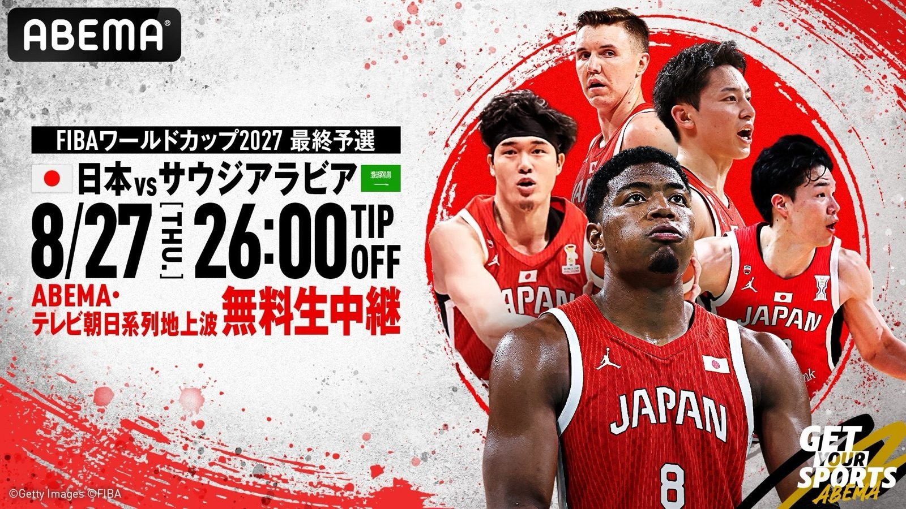

深夜2時、W杯への初戦 —— 最終予選サウジアラビア戦、ABEMAが無料生中継
2027年のワールドカップへ、いよいよ最終予選が始まる。FIBAバスケットボールワールドカップ2027 アジア地区予選「Window4」、日本の初戦の相手はサウジアラビア。2026年8月27日（木）、アウェーでのTIP OFFは日本時間の深夜2時。この一戦をABEMAが無料生中継すると、株式会社AbemaTVが8月14日に発表した。

眠い。でも、見たい
中継は深夜1時30分スタート、TIP OFFは深夜2時。正直、体にやさしい時間ではない。それでも「W杯出場へ向けた最終予選の、その初戦」と言われたら話は別だ。ABEMAでの無料生中継に加えて、テレビ朝日系列（一部地域を除く）でも放送が予定されている。翌朝の眠気と引き換えにする価値は、ある。
八村と河村がいる最終予選
このWindow4には、八村塁と河村勇輝が合流し、出場を予定している。日本代表は8月上旬のモンゴルとの国際試合、そして韓国との直前強化試合を経て、この最終予選に入っていく。NBA組を擁した状態でアジアの予選を戦う——数年前まで「もしも」の話だった景色が、当たり前になりつつある。
河村のドキュメンタリーも
ABEMAでは、オリジナルドキュメンタリー『河村勇輝 NBA SURVIVAL』全3話——「覚悟」「激闘」「未来」——も配信中だ。深夜2時を待つ間の予習には、ちょうどいい。
出典: 株式会社AbemaTVプレスリリース「ABEMA、『FIBAバスケットボールワールドカップ2027 アジア地区予選 Window4』ワールドカップ出場へ向けた最終予選の初戦となる男子日本代表vsサウジアラビア代表を無料生中継」（PR TIMES・2026年8月14日）
https://prtimes.jp/main/html/rd/p/000003797.000064643.html